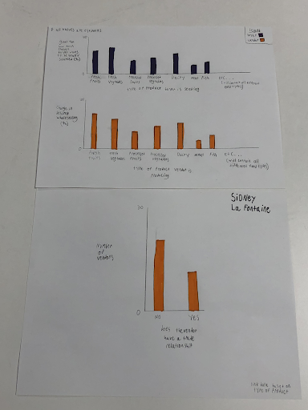
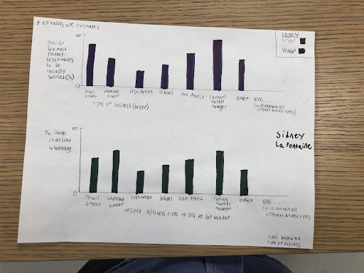
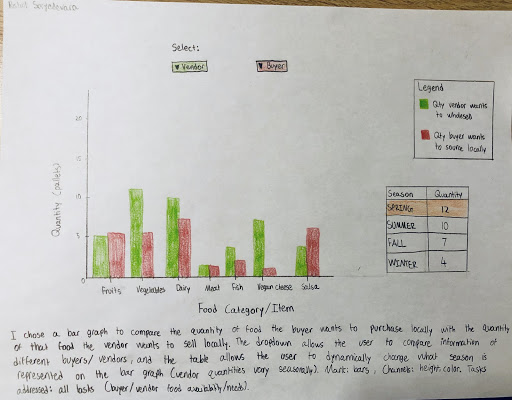
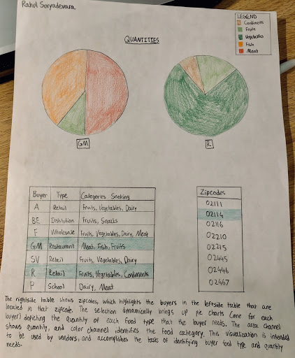
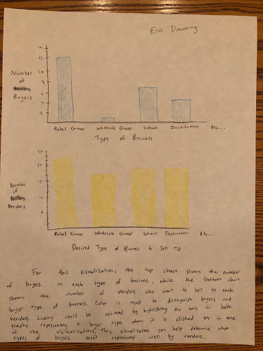
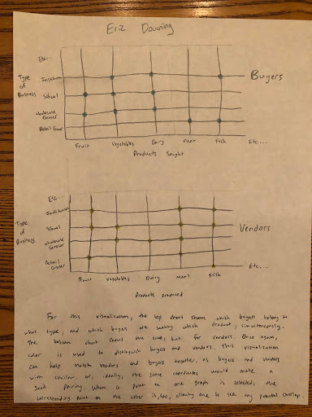
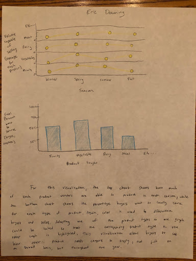
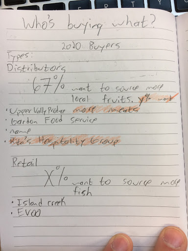
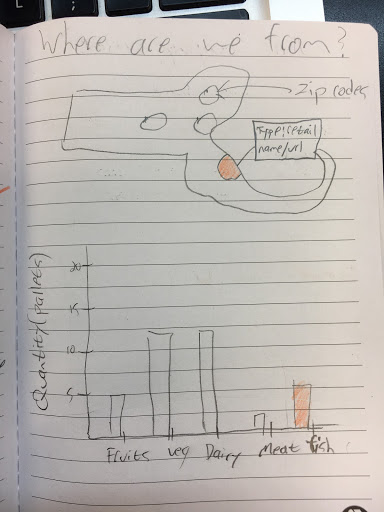
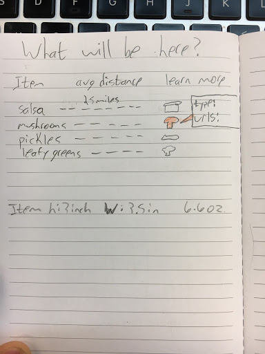

Demo Video
Embedded MP4 demo video using the HTML5 <video> tag. For example, this screen recording Prof. Cody Dunne made of Mike Bostock's flexible transitions in D3 slide:
Visualization explanation
Final visualization screenshots (PNG images), design justifications, UI walk-through, and linked presentation slides.
Design Justification
The essence of this visualization is to show buyers and vendors that there is an advantage in establishing a trade relationship. For vendors, this is indicated by the seasonal quantities produced, where higher production correlates to more business and outreach. For buyers, the bar chart implies that vendors without trade relationships have more opportunity, therefore desire, to increase their wholesaling. This indicates to buyers that there are vendors looking for more outlets. This is where the map comes in, a visualization that informs the buyer which vendors meet their food type needs (along with their trade relation status and zipcode location).
Line Chart
The two lines represent vendors with and without a trade relationship, with color coding to indicate this. For this visualization, we took the average production of vendors per season. This will immediately tell buyers which vendors (ones with trade relations or not) to seek based on their quantity needs per season. This also generally indicates to vendors that having trade relationships increases their production. We have enabled points on the line chart which the user can hover over to see the exact quantity. The user can select a line, which increases its opacity, and this selects all data points acorss the visualization that indicate vendors with the same trade relation status.Bar Chart
The two bars represent vendors with and without trade relationship, with color coding to indicate this. For this visualization, we took the average desired percent increase in wholesaling for vendors (based on trade relationship). The numbers on top of the bars make it easier to interpret the chart, and the juxtaposition of the two bars clearly shows that there is opportunity in establishing trade relationships with vendors: increased wholesaling. The user can select a bar, which increases its opacity, and this selects all data points acorss the visualization that indicate vendors with the same trade relation status.Map
The points indicate zipcodes, which include all the vendors present in that zipcode. If there are vendors in the same zipcode with a different trade relation, they are given a separate point (by modifying the latitude and longitude values very slightly). This prevents occlusion if many vendors are added (grouped by zipcode- at most two points per zipcode). This also enables the points to be color coded based on trade relationship status. The user can highlight one or many points by clicking and dragging over them. This provides details on demand, displaying a table beside the map (but only the rows for the points that have been selected) which shows each point's zip code and the food produced by the vendor located there.UI Walk-through
The user may interact with any visualization to start with. For the line chart, the user may hover over the lines to get the exact quantities produced at specific points. The user can select a line (with trade relation, for example) to highlight (by increasing opacity) all the points on the map and corresponding bar with the same trade relation status. The bar chart has similar functionality, as this linking goes both ways. For the map, the user can brush a section of points to get more information about them in a chart next to the map (zipcode, food types produced, and trade relationship status). By brushing over those points the user will also highlight all the data with the corresponding trade relationships in the other 2 visualizations. For example, if you brush over data without a trade relationship in the map, the data in the other visualizations without a trade relationship with also be highlighted. If you brush over data with and without a trade relationship in the map, the data in the other visualizations with and without a trade relationship with also be highlighted.[INSERT SCREENSHOT OF DEFAULT VISUALIZATION]
[INSERT SCREENSHOT OF USER HOVERING OVER A POINT ON LINE CHART]
[INSERT SCREENSHOT OF USER HIGHLIGHTING A LINE ON LINE CHART]
[INSERT SCREENSHOT OF USER HIGHLIGHTING A BAR ON BAR CHART]
[INSERT SCREENSHOT OF USER HOVERING OVER A POINT ON MAP]
[INSERT SCREENSHOT OF USER SELECTING A POINT ON MAP]
Data Analysis
Data collection: in-person surveys collected by the Sustainable Business Network at the Local Trade Show
Data Summary
Below are the columns we are using between the three visualizations. The bolded data types are ones we added or derived (derived attributes list the attributes from the original dataset). The data was collected through in-person surveys collected by the Sustainable Business Network at the Local Trade Show.
Mailing Address (Zip)
- Data Type: string
- Data Preprocessing: appended 0 to the beginning of each
- Data Summary:Represents the zipcode for each vendor. Latitude and longitude were added as a means to map out the zipcodes.
Latitude and Longitude [one column each coordinate]
- Data Type: float
- Data Preprocessing: Data preprocessing: found the coordinates for each zip code; differentiated between vendors with the same zip code but different trade relation status by adding 0.008 to the longitude and latitude so the points do not overlap on the map
- Data Summary: These are the coordinates of each zip code
Does your company currently have a trade relationship with a buyer?
- Data Type: yes/no booleans
- Data Preprocessing: all strings were set to lowercase, dropped any additional words or symbols that were not ‘yes’ or ‘no’
- Data Summary: We use this to separate our dataset into the two categories: has trade relation or not.
Please list the specialty crop(s) that you produce or are contained in your product(s).
- Data Type: string
- Data Preprocessing: made lists lower case, replaced commas and spaces with forward slashes
- Data Summary: Represents list of the crops produced by each vendor, which in turn are identified by their zip code.
Spring, Summer, Fall, Winter Capable Volume [One column each season]
- Data Type: float
- Data Preprocessing: Took the average of the bucket representing quantity (e.g. 4 for the 3-5 bucket). For the 20+ bucket, assumed 21. Computed the average production per season of all vendors. Standardized “N/A” answers to “Not Applicable”, and ignored them in the computation.
- Data Summary: Represents how many pallets each vendor is capable of producing per season. The food items produced by a zip code consists of the food items produced by each vendor in that zipcode (with the same trade relation status).
Approximately what percentage of your products do you currently sell wholesale?
- Data Type: float
- Data Preprocessing: dropped “%” text, changed string into float
- Data Summary: Represents the percentage of products that the vendor currently does wholesale
Do you have a goal for what percentage of your products you would like to sell wholesale?
- Data Type: float
- Data Preprocessing: dropped “%” text, changed string into float
- Data Summary: Represents the percentage of products vendor desires to wholesale
Percent Change in Desired Wholesaling
- Data Type: float
- Data Preprocessing: Calculated by subtracting the two previous columns: (Do you have a goal for what percentage of your products you would like to wholesale? ) - (Approximately what percentage of your products do you currently wholesale?). Standardized “N/A” answers to “Not Applicable”, and ignored them in the computation.
- Data Summary: Represents the difference between the goal for what percentage of products the vendor would like to wholesale, and approximately what percentage of products the vendor currently does wholesale.
Task Analysis
Task Table
| Index (ID #) | Domain Task | Analytic Task | Search Task | Analyze Task | Description of Implementation |
|---|---|---|---|---|---|
| 1 | Comparing quantity vendors are capable of producing based on trade relationship status | Compare | Locate | Derive | Depicted in the line chart through 2 different lines corresponding to the trade relation status. |
| 2 | Comparing ability to meet increased wholesaling demand based on trade relationship status | Compare | Locate | Derive | Depicted in the bar chart through 2 bars corresponding to the trade relation status. |
| 3 | Identify trade relationship status of vendors | Identify | Lookup | Present | Depicted through the color coding of the legend. |
| 4 | Identify location of the vendors | Summarize | Explore | Discover | Depicted through the map which allows users to explore the different locations of farms. |
| 5 | Identify what type of food vendors produce | Summarize | Explore | Discover | Depicted through the map which allows users to explore the different produce produced at locations of farms. |
Design Process
Sidney La Fontaine Visualizations
Visualization 1
This visualization contains 3 different individual visualizations, the top one compares type of food a buyer is seeking (x-axis) and goal for how much product a buyer wants sources locally (y-axis), the middle one compares the changing in the desired wholesaling for a vendor (y-axis) and the type of product a vendor produces(x-axis), and the bottom one shows how many vendors have a trade relationship and how many do not. I used color to distinguish data from buyers, blue, to vendors, orange, and I would link the data based on the type of product. This visualization addresses: identity what type of food vendors produce, identify buyers’ food type needs, identify quantity buyers can buy (in percent), identify quantity vendors can produce/sell (in percent), and illustrates how many vendors do and do not have trade relationships.
Visualization 2
This visualization contains 2 different individual visualizations, the top one compares type of business a buyer is (x-axis) and goal for how much product a buyer wants sources locally (y-axis), the bottom one compares the changing in the desired wholesaling for a vendor (y-axis) and the type of business a vendor wants to sell to(x-axis). I used color to distinguish data from buyers, blue, to vendors, green, and I would link the data based on the type of business. This visualization addresses: how much more vendors want to sell to different types of businesses, what percent of total food different types of businesses want to source local food for, and hopefully the connection between these two needs.
Visualization 3

This visualization contains 3 different individual visualizations, the top left one compares whether a vendor has a trade relationship (x-axis) and percent change in the desired wholesaling (y-axis), the top right one compares the difference in the volume capable and actually produced by a vendor (y-axis) and the season of the year (x-axis), and contains separate lines for vendors that do and do not have a trade relationship, and the bottom one shows how many vendors have a trade relationship and how many do not. I used color to distinguish data from vendors that do and do not have a trade relationship, and I would link the data based on whether a vendor does and does not have a trade relationship. This visualization addresses: identify the difference in quantity, both in pallets and percent, vendors can produce and do produce, and how many vendors already have a trade relationship.
Rahul Suryadevara Visualizations
Visualization 4
I chose a bar graph to compare the quantity of food the buyer wants to purchase locally with the quantity of that food the vendor wants to sell locally. The dropdown allows the user to compare information of different buyers and vendors, and the tabla allows the user to dynamically change what season is being represented on the bar graph (vendor quantities vary seasonably). Mark: bars, Channels: height, color. Tasks addressed: all tasks (buyer/vendor food availability/needs).
Visualization 5
The rightside table shows zipcodes, which highlights the buyers in the leftside table that are located in that zipcode. The selection dynamically brings up pie charts (one for each buyer) depicting the quantity of each food type that the buyer needs. The area channel shows quantity, and the color channel identifies the food category. This visualization is intended to be used by vendors, and accomplishes the tasks of identifying buyer food type and quantity needs.
Visualization 6

The rightside table allows the user to select the vendor(s) to show which buyer types those vendors cater to (collectively). The channel representing association is color (teal), and red represents a selected buyer. A barchart for the selected buyer displays the food category quantities it needs, compared to how much the vendor produces. The user can cycle through graphs of all vendors that can sell to the selected buyer (based on type). The bar mark represents quantity. This visualization addresses all tasks (buyer/vendor food availability/needs).
Eric Downing Visualizations
Visualization 7
For this visualization, the top chart shows the number of buyers in each type of business, while the bottom chart shows the number of vendors who want to sell to each type of business. Color is used to distinguish buyers and vendors. Linking would be achieved by highlighting the bars in both graphs representing a buyer type when it is selected in one of the graphs. This visualization can help determine what types of buyers are not represented well by vendors
Visualization 8
For this visualization, the top chart shows which buyers belong to what type, and which buyers are seeking which product, simultaneously. The bottom chart shows the same, but for vendors. Once again, color is used to distinguish buyers and vendors. This visualization can help match vendors and buyers together, as buyers and vendors with similar, or ideally the same, coordinates in the graphs would make a good pairing. When a point on one graph is selected, the corresponding point on the other is too, allowing one to see any potential overlap.
Visualization 9
For this visualization, the top chart shows how much of each product vendors are able to produce in each season, while the bottom chart shows the percentage buyers want to locally source for each type of product. Again, color is used to distinguish buyers and sellers. Selecting one of the product types on one graph would be linked so that the corresponding product types on the other graph is highlighted. This visualization allows buyers to see how their product needs compare to supply, not just on an overall basis, but throughout the year.
Alex Shaw Visualizations
Visualization 10
This visualization seeks to improve the SNB’s current method of displaying buyer information, which is essentially just a list of hyperlinks. I wanted to use a simple graphic, large interactive percentages. If we are able to receive the names tied to buyer survey responses, then the percentage of buyers seeking x, can be linked to the url of said buyers.
Visualization 11
This visualization makes use of the zip codes collected in the vender survey. We can link the quantities of pallets of particular food categories back to the original zip code, emphasizing the locality of the SBN trade show. Only problem is that some of the vendor survey data on produce volume is aggregated, so we might not be able to categorize in this manner.
Visualization 12
This visualization was inspired by a graphic used by farmer’s markets. If we do some dataset cleaning, then we can separate each individual item that the vendors plan on bringing to the trade show. I do not know how we would order these items, maybe alphabetized. Then, we map item’s zip code and calculate the average distance traveled for all salsas to Northeastern university from the center of said zip code. On the right side of the graphic, we can display a cartoon of the food item with a clickable window to show the detail of our chosen category, including potential information like the type of businesses that produce mushrooms or the urls to their website (if we can get this).
Top 3 Visualizations
We choose visualization 2, 4, and 5. Visualization 2 contains 2 different individual visualizations, the top one compares type of business a buyer is (x-axis) and goal for how much product a buyer wants sources locally (y-axis), the bottom one compares the changing in the desired wholesaling for a vendor (y-axis) and the type of business a vendor wants to sell to(x-axis). I used color to distinguish data from buyers, blue, to vendors, green, and I would link the data based on the type of business. This visualization addresses: how much more vendors want to sell to different types of businesses, what percent of total food different types of businesses want to source local food for, and hopefully the connection between these two needs. We particularly liked this visualization because it’s easy to follow and makes a lot of conceptual sense while also being informative and satisfying multiple tasks at once. It especially shows potential partnerships between different types of buyers and vendors.
We chose visualization 4 because it juxtaposes data on the buyer and vendor to allow the user to make direct comparisons on the quantity of food, by category, that the buyer wants to buy and vendor wants to sell. An interactive component is included to allow the user to dynamically update the visualization based on the chosen buyer/vendor. This allows the user to make comparisons across all the available buyers and vendors in the database. The table on the right lists the four seasons along with quantity of food that the vendor can produce per season. This allows the buyer to make decisions on which vendor is best suited for which season. Color is used to distinguish buyer from vendor, and the bar mark depicts quantities. The current provided data does not suffice to make this visualization, however, because we require at a minimum the names of the buyers and vendors, and furthermore the quantities the buyers and vendors are buying/selling. The quantity of food produced by vendors (overall) per season is available, but this should also exist for buyers, and per category (for a more effective comparison). This visualization addresses all four tasks listed.
Visualization 5 consists of three components: a table of zipcodes, a table of buyers with their business type and food categories demanded, and a pie chart summarizing the quantity demanded per food category for the selected buyer(s). This visualization allows a user to select a zipcode and see which buyer(s) is located in that zipcode (i.e. to inform them which organizations are closer), and also highlights their business type. The dataset mentioned that vendors are looking to cater to certain business types. Finally, based on the number of buyers highlighted, pie charts appear with the relative quantities each buyer needs for their required food categories. This would allow the vendor to determine which buyer is a better partner for them. The area channel depicts quantity, and color channel depicts category. Again, data on the quantity of food needed for each buyer is required. This visualization addresses the tasks of determining what kind of food and quantity the buyer requires. We chose this visualization because it has a simple implementation for location filtering, as well as easy-to-spot results that would help inform vendors’ decisions.
Design Iterations
From the original sketch, we decided
Final Visualization Decision
The visualization we decided to implement was visualization 6 (see above). This visualization is actually not one of our three top choices from Project Assignment 4. After further critical examination of our visualizations this week, we decided that despite this, visualization 3 is just as informative as our top picks, while also being more straightforward to both implement and understand. Additionally, the data availability was too limited to implement our top designs, whereas visualization 3 uses data that has already been provided. Because of this, we decided to choose visualization 3 over visualizations 2, 4, and 5, which were our original top three picks.
We wanted our visualization to encourage potential buyers to attend the Trade Show, and are browsing the website to see if the trade show is a productive use of their time. Our visualization draws three conclusions by summarizing survey data: desire of vendors to find new trade partners and make larger wholesalers, volume that vendors can produce at the moment, and a map of containing vendor’s zip codes. Connecting these three ideas will encourage potential buyers visiting the website to join the trade show, where finding new partners will be very efficient.
Usability Test Results
We tested five tasks on multiple classmates in a visualization usability test. They found that the line chart points should disctint, so it can be recognized as an interaction. It is easy to tell the difference between vendors with or without a trade relationship and their capacity to produce food. This is due to the fact that brushing and linking between the map and the charts is very simple.
| Based on these notes, we decided to: |
|---|
| Reorientate charts and map to be stacked on top of eachother |
| Describe what having a trade relation means |
| In the write up, justify our use of brushing and linking |